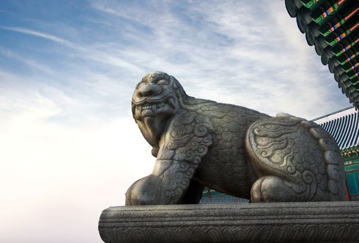

Namsan Tower in Namsan Park
Seoul Tower has too many tourists and crowds, there is little
I think that is below Namsan Park as the best place on the road that leads
around to enjoy the cherry blossoms. The perimeter road that leads down to
the Namsan Tower in Namsan Park and the Namsan Library Bus Stop.


NSEOUL TOWER
Sky observation deck, revolving restaurant N GRILL, such as
restaurant reservations hankuk guidance, the more traffic
information

For any travel booking the best trip.
Ride the cable car to go to Namsan Park
Go up to the top filled with love locks also saw made
You are overlooking the panoramic view of Seoul at a glance.